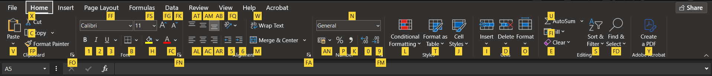
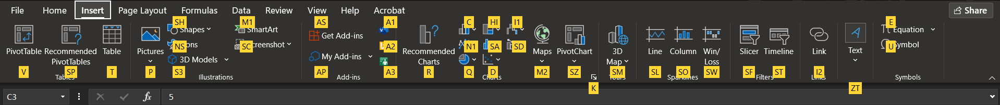
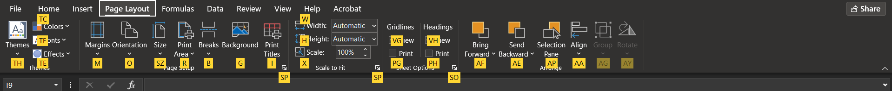
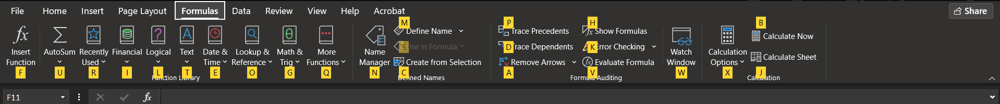
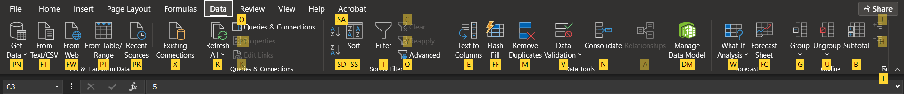
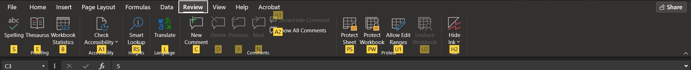
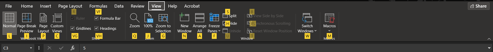

Обработка и анализ на данни чрез електронни таблици
- Приложните програми, използвани за организация, анализ и съхранение на данни в табличен вид
са таблични процесори.
- Електронният документ създаден с помощта на табличен процесор е електронна таблица.
- Всеки табличен процесор има набор от средства за управление на елктронни таблици (ЕТ):
- структура на документа;
- клетки за въвеждане на стойност - самостоятелно или чрез формула;
- редактиране на въведените стойности в клетките;
- редактиране структурата на ЕТ чрез изтриване, добавяне, обединяване на клетки и колони и други;
- отпечатва готовият документ или части от него;
- адреси - A1, B2, C3 и т.н., където A е колоната, 1,2,3 и т.н... реда, адреса е пресечната им точка;
пример:
| A | B | C | D | E | F | G | |
|---|---|---|---|---|---|---|---|
| 1 | A1 | B1 | C1 | D1 | E1 | F1 | G1 |
| 2 | A2 | B2 | C2 | D2 | E2 | F2 | G2 |
| 3 | A3 | B3 | C3 | D3 | E3 | F3 | G3 |

- Clipboard с команди: Alt + H -> FO - Copy; Ctrl + C - Cut; Ctrl + X - Paste; Ctrl + V - Font / Шрифт, който включва: Alt + H -> FN - Bold / Italic / Underline Ctrl + B / I / U - Смяна на шрифт Ctrl + Shift + F / Alt + H -> FN - смяна на цвят на клетка ALt + H -> H - смяна на цвят на шрифта Alt + H -> FC - Alligment (подравняване) Alt + H -> FA - отгоре / по средата / отдолу: Alt + H -> AT / AM / AB - от ляво / центрирано / от дясно: Alt + H -> AL / AC / AR - обединяване на клетки (Merge cells): Alt + H -> M - пренасяне на текст (Wrap text): ALt + H -> W - файлов тип на клетката: Ctrl + 1 -> Избор с Tab или ляв бутон на мишката - Общи (General) Ctrl + Shift + ~ - Число (Number) Ctrl + Shift + ! - Валута (Currency) Alt + H -> N -> Arrow Keys (↓ ↑) - Счетоводство (Accounting) Alt + H -> N -> Arrow Keys (↓ ↑) - Дата (Date) (календарна) Ctrl + Shift + # - Час (Time) Ctrl + Shift + @ - Процент (Percentage) Ctrl + Shift + % - Дроб (Faction) Ctrl + Shift + ^ - Научна (Scientific) Ctrl + Shift + ^ - Текст (знаков низ) Alt + H -> N -> Arrow Keys (↓ ↑) - Специален (Special) Alt + H -> N -> Arrow Keys (↓ ↑) - По избор (Custom) Alt + H -> N -> Arrow Keys (↓ ↑) - Styles / Стипове: - Conditional Formatting - оцветяване на клетка: Alt + H -> L - Format as a table - форматирай като таблица: Ctrl + T / Alt + H -> T - Cell Styles - стилизирай клетка: Alt + H -> J - Cells / Клетки: - Insert - добави клетка / ред / колона: Ctrl + Shift + = - Delete - изтрий клетка / ред / колона: Ctrl + - - Format - преоразмери клетка / ред / колона: Alt + H -> O -> A / I за автоматично преоразмеряване - Editing - Редактиране на клетки и съдържание: - Fill - попълни клетка: Alt + H -> Fl - Clear - изчистване на съдържание / формат и др. Alt + H -> E -> A / F - Sort and Filter - сортиране и филтри: Alt + H -> S - Find and Select - откриване на съдържание: Alt + H -> FD Раздел Insert (Alt + N), който съдържа:
- Tables / Таблици, която група включва: - PivotTable - обобщена таблица: Alt + N -> V - Recomended PivotTables: Alt + N -> SP - Table - обикновена таблица: Alt + N -> T - Illustrations / илюстрации, която група включва: - Pictures - снимки: Alt + N -> P - Shapes - форми: Alt + N -> SH - Icons - икони: Alt + N -> NS - 3D Models - 3-измерни обекти: Alt + N -> S3 - Charts - добавяне на графики Alt + N -> R / C / HI / I1 / N1 / SA / SD / Q / D / M2 / SZ - Sparklines - мини графики с linii, колони и др. Alt + N -> SL / SO / SWw - Link - хипервръзки към други сайтове/файлове: Ctrl + K - TextBox - текстово поле: Alt + N -> ZT - Equation / Symbols - математически уравнения / символи Alt + N -> E / U Раздел Page Layout (Alt + P), който съдържа:
- Themes / Colors / Fonts / Effects - теми/цветове/шрифтове/ефекти: Alt + P -> TH / TC / TF / TE - Page Setup - настройки за отпечатване върху лист: - Margins - полета на страница за печат: Alt + P -> M - Orientation - позиция на листа: Alt + P -> O - Size - размер на листа: Alt + P -> SZ - Print Area - полета за отпечатване: ALt + P -> R - Breaks - крайно поле за отпечатване на страница: Alt + P -> R - Background - задаване на фон: Alt + P -> G - Print Titles - имена на страниците: ALt + P -> I - Scale to Fit - побери върху лист: Alt + P -> SP - Width: Alt + P -> W - Height: Alt + P -> H - Sheet Options - варианти за видимост въхру печат: Alt + P -> SO - Gridlines - линии на мрежата - View - показване на линии: ALt + P -> VG - Print - линии за печат: Alt + P -> PG - Headings - заглавия: - View - показване на заглавия на редове и колони: ALt + P -> VH - Print - печат на заглавия на редове и колони: Alt + P -> PH - Arrange - варианти за подравняване: Alt + P -> AF / AE / AP / AA Раздел Formulas - Формули и функции (Alt + M), който съдържа:
- Function Library / Библиотека за функции, която включва: - Insert Function - добави готова функция: Alt + M -> F - AutoSum: Alt + = / Alt + M -> U - Recently Used / Последно използвани: Alt + M -> R - Financial / Финансови функции: Alt + M -> I - Logical / Логически функции: Alt + M -> L - Text / Функции с проверка на текст: Alt + M -> T - Date & Time / Дата и час: Alt + M -> E - Lookup & Reference: Alt + M -> O - Math & Trig / Математически функции: Alt + M -> G - More Funcions / Допълнителни функции: Alt + M -> Q - Defined Names / Дефинирани имена на променливи за препращане към адреси за използване във формула, която включва: - Name Manager / Управление на създадени променливи: Alt + M -> N - Define Name / Създай име на променлива: ALt + M -> M - Create from Selection / Създай от избраните: Alt + M -> C - Formula Auditing / Проверка и проследяване на формули, което включва: - Trace Precedent / Проследи предшественици: Alt + M -> P - Trace Dependents / Проследи зависими: Alt + M -> D - Remove Arrows / Премахване на проследяване: Alt + M -> A - Show Formulas / Покажи функции: Alt + M -> H - Error Checking / Проверка за грешки: Alt + M -> K - Evaluate Formula / Проследяване стъпка по стъпка на функция: Alt + M -> V - Watch Window - прозорец за наблюдение: Alt + M -> W - Calculation / Изчислителни настройки: Alt + M -> X / B / J Раздел Data - данни (Alt + A), който съдържа:
- Get & Transform Data, група която включва: - Get Data / Извлечи данни от: Alt + A -> PN - From Text/CSV: Alt + A -> FT - From Web: Alt + A -> FW - From Table/Range: Alt + A -> PT - Recent Sources: Alt + A -> PR - Existing Connections: Alt + A -> X - Queries & Connections: Alt + A -> R / O / P1 / K - Sort & Filter - сортиране и филтриране по възходящ/низходящ ред: Alt + A -> SA / SD / SS - Data Tools / Инструменти за обработка на данни, група която включва: - Text to Columns / Прехвърляне на текст към колони: Alt + A -> E - Flash Fill: Alt + A -> FF - Remove Duplicates / Премахни дубликати: Alt + A -> M - Data Validation / Проверка за коректност на въвеждани данни: Alt + A -> V При необходимост от работа с конкретен тип данни; - Consolidate / Обобщаване на сходни данни в една справка: Alt + A -> N - What-if Analysis / Forecast Sheet: Alt + A -> W / FC - Group / Ungroup / Subtotal: Alt + A -> G / U / B Раздел Review - проверка (Alt + R), който съдържа:
- Proofing група за правопис, която включва: - Spelling: Alt + R -> S - Thesaurus: Alt + R -> E - Workbook Statistics: Alt + R -> B - Accessibility: Alt + R -> A1 - Insights: Alt + R -> RS - Language: Alt + R -> L - Comments: Alt + R -> C / D / V / N / H1 / A2 - Protect група, която включва: - Protect Sheet / Защити работен лист: Alt + R -> PS - Protect Workbook / Защити работна книга: Alt + R -> PW - Allow Edit Ranges / Позволи редакция на област: Alt + R -> U1 - Hide Ink / Скрий мастило Alt + R -> H2 Раздел View - преглед (Alt + W), който съдържа:
- Workbook Views / Изглед на работна книга - група, която включва: - Normal / Нормален изглед: Alt + W -> L - Page Break Preview / Разделяне на изглед на страници: Alt + W -> I - Page Layout / Изглед като полета на A4 портрет за печат: Alt + W -> P - Show / Покажи или скрий области: Alt + W -> R / VG / VF / VH - Zoom / Приближи или отдалечи изглед: Alt + W -> Q / J / G - Windows / Прозорци, група която включва: - New Windows / Нов прозорец към нова работна книга: Alt + W -> N - Arrange All / Преоразмеряване на отворени работни книги: Alt + W -> A - Freeze Panes / Замразяване на прозороци: Alt + W -> F - Split / Разделяне на изглед: Alt + W -> S - Hide / Скрий работна книга: Alt + W -> H - Unhide / Покажи скрита работна книга: Alt + W -> U - Switch Windows / Показване на друга отворена работна книга: Alt + W -> W - Macros / Меню за създаване и редактиране на макроси: Alt + W -> M Пример за Countif за годишен резултат: =COUNTIFS('Годишен резултат'!E7:E16;">2.99";'Годишен резултат'!E7:E16;"<3.50") =COUNTIFS('Годишен резултат'!E7:E16;">3.49";'Годишен резултат'!I7:I16;"<4.50") =COUNTIFS('Годишен резултат'!E7:E16;">4.49";'Годишен резултат'!I7:I16;"<5.50") =COUNTIFS('Годишен резултат'!E7:E16;">5.50";'Годишен резултат'!I7:I16;"<5.50") Пример за IF-Else за оценки: =IF(Q7<3;"Слаб";IF(Q7<3.5;"Среден";IF(Q7<4.5;"Добър";IF(Q7<5.5;"Мн. Добър";IF(Q7<7;"Отличен";))))) Зад. 1.1: =99/4+(1/2)^2-4 Степенуване на 2-ра степен =36^(1/2)+25^(1/2)+64^(1/3)+16^(1/4) Корен квадратен, корен квадратен на 3-та степен и корен квадратен на 4-та степен Зад. 1.4: =IF(H2>=$O$6;"получава";"не получава") O6 e със стойност на клетката - 5 за определяне на вид стипендия вариант 1: =IF(AND(H2<$O$6; H2>=2);"---";IF(AND(H2>=$O$6; H2<$O$7);"училищна";IF(AND(H2>=$O$7;H2<=6);"ЕВРОСТИПЕНДИЯ";"сгрешена стойност"))) отваряме IF проверка, с вложено AND условие; усложних решението с проверка за коректност на данните. Разклонен алгоритъм. вариант 2: =IF(H3<5;"-----";IF(H3>=5,5;"ЕВРОСТИПЕНДИЯ";"училищна")) обикновено решение, без проверка за коректност на данните *Може да се добави Data Validation за възможни стойности на оценките от 2 до 6 Маркиране на клетките с оценки -> Data Validaton -> Allow: Decimal -> Data: Between -> Minimum: 2 -> Maximum: 6; Зад. 1.5: Условие 1: Sort & Filter -> Sort By -> Село -> Sort On: Cell Values -> Order: A to Z + Add Level -> Then By -> Област -> Sort On: Cell values -> Order: A to Z възходящ и Z to A низходящ Условие 2: Добавяне на данните към таблица и създаване на Custom Sort filter: Sort & Filter -> Custom Sort -> Custom List -> New List -> Сливен, Пловдив, Стара Загора, Ямбол + Add Level -> Then By -> Село -> A - Z sort Зад. 1.6 Маркиране на всички необходими данни -> Insert -> Table (добавяне на таблица) 1. Отметка върху "Население (души)" -> Number Filters -> Greater than -> 500 2. Отметка върху "Население (души)" -> Number Filters -> Less than -> 500 3. Отметка върху "Гъстота (души/km2)" -> Number Filters -> Greater than -> 20 4. Отметка върху "Гъстота (души/km2)" -> Number Filters -> Less than -> 20 5. Отметки върху "Население (души)" и "Гъстота (души/km2)" -> Clear Filter from 6. Custom Filter -> Number Filters -> Greater than -> 20.000 на землище -> Население -> Number Filter -> Between -> 400 и 2000 Зад. 1.7 Маркират се данните от колона успех -> Data -> Data Validation -> Allow: Decimal -> -> Data: Between -> Minimum: 2 -> Maximum: 6; -> Input Message -> Title и Input message по избор и [v] Show input message when cell is selected -> Error Alert -> Style: Stop; Title и Error message по избор [v] Show error alert after invalid data is entered Условие за въвеждане на буквите "м" и "ж" или празно поле: Същото като гореописаното, но в Settings се правят следните настройки: Data -> Data Validation -> Settings -> Allow: Custom -> -> Formula: =IF(OR(D13="м"; D13="ж"; D13=""); TRUE; FALSE) Зад. 1.8 Маркиране на данните от полетата, за които правим диаграма -> Insert -> Line Chart, Column или други по избор -> More charts и избираме подходящ стил Зад. 2.1 Функция за проверка на стойност между 100 и 500: =IF(AND(B2>=100; B2<=500);TRUE;FALSE) Зад. 2.2 Маркиране на област от клетки в колона, които да се оцветят и да имат икона за стойност -> -> Home -> Conditional formatting -> Icon sets -> 4 star rating; -> Home -> Conditional formatting -> Color scales -> Green - Yellow Функция за изписване на стойности с конкретни думи и проверка на стойности във функцията: =IF(AND(E2>=2;E2<2.5);"слаб";IF(AND(E2>=2.5;E2<3.5);"среден";IF(AND(E2>=3.5;E2<4.5);"добър";IF(AND(E2>=4.5;E2<5.5); "мн. добър";IF(AND(E2>=5.5;E2<=6);"отличен";"грешка"))))) Варианти за решение на функция без проверка за данни, но трябва да се направи Data Validation: вариант 1: =IF(E10<2,5;"слаб";IF(E10<3,5;"среден";IF(E10<4,5;"добър";IF(E10<5,5;"мн. добър";"отличен")))) =IF(F2<2,5;"слаб";IF(F2<3,5;"среден";IF(F2<4,5; "добър"; IF(F2<5,5; "мн. добър"; "отличен")))) вариант 2: =IF(F2<2,5;"слаб";IF(AND(F2>=2,5;F2<3,5);"среден";IF(AND(F2>=3,5;F2<4,5); "добър"; IF(AND(F2>=4,5;F2<5,5); "мн. добър"; "отличен")))) *Маркиране на адрес на клетка и натискане на F4 превръща стойността на клетката в абсолютна $F$4 Изписване на грешка и оцветяване на клетка и текст с конкретен цвят: Маркиране на област от клетки -> Conditional Formatting -> Manage Rules -> -> New Rule -> format only cells that contain -> Format only cells with: Specific Text -> -> containing -> грешка (или друга дума по избор) -> Format... -> Font -> Цвят на текст -> Underline: Double -> Border: outline -> fill -> Избор на цвят за клетка и т.н. *По същия начин се създават правила и за оцветяване на клетка с текст "не получава" и "получава" Функция за изчисление извеждане на текст - получава, не получава или грешка: =IF(AND(E2>=$Q$1;E2<=$Q$7);"получава";IF(AND(E2<$Q$1;E2>=$Q$6);"не получава";"грешка")) (стойности за минимален успех за училищна стипендия и ЕВРОСТИПЕНДИЯ съм изнесъл с клетки Q1 и Q2) (клетки Q6 и Q7 съдържат допустима долна и горна граница за оценка) Функция за определяне на вид стипендия: =IF(AND(E2>=$Q$2;E2<=$Q$7);"ЕВРОСТИПЕНДИЯ";IF(AND(E2>=$Q$1;E2<$Q$2);"училищна";IF(AND(E2>=$Q$6; E2<$Q$1);"---";"грешка"))) *От Conditional Formatting се създават правила и за оцветяване на клетка с текст "ЕВРОСТИПЕНДИЯ" (отново стойностите за мин. успех за училищна и ЕВРОСТИПЕНДИЯ са изнесени в клетки Q1 и Q2) (проверка за допустими стойности за оценки в клетки Q6 и Q7) Функция за изчисление на стойност на стипендията: =IF(AND(E2>=$Q$2;E2<=$Q$7;D2>=18);$O$12;IF(AND(E2>=$Q$1;E2<$Q$2;D2>=18);$O$11;IF(AND(E2>=$Q$2;E2<=$Q$7;D2<18); $O$10;IF(AND(E2>=$Q$1;E2<$Q$2;D2<18);$O$9;$O$8)))) (предварително изчислена стойност на видовете стипендия в клетки O9, O10, O11, O12 и O8 за 0.00) (Функция за изчисление на стойност - =N9*$Q$3, където N9 е процента, а Q3 е мин. р. заплата) *Изписване на 0.7 в клетката -> Percent Style (Ctrl + Shift + %) Зад. 3.1 Функция за размяна на стойности с CHOOSE: =CHOOSE(A2;$B$2;$B$3;$B$4;$B$5;$B$6;$B$7;$B$8) Зад. 3.2 IF_OR Функция за изчисление и изписване на текст получава или не получава: =IF(OR(C2>10000;D2>200);"получава";"не получава") 1 съкратена функция за изчисление на процент комисионна: =IF(AND(E2="получава";C2<$I$2);$J$1;IF(AND(E2="получава";C2<$I$3);$J$2;IF(AND(E2="получава";C2<$I$4);$J$3; IF(AND(E2="получава";C2<$I$5);$J$4;IF(AND(E2="получава";C2<$I$6);$J$5;IF(AND(E2="получава";C2>$I$6);$J$6;K1)))))) 2 Функция за изчисление на процент комисионна: =IF(AND(E2="получава";C2<$I$2);$J$1;IF(AND(E2="получава";C2>$I$2;C2<=$I$3);$J$2;IF(AND(E2="получава";C2>$I$3; C2<=$I$4);$J$3;IF(AND(E2="получава";C2>$I$4;C2<=$I$5);$J$4;IF(AND(E2="получава";C2>$I$5;C2<=$I$6);$J$5; IF(AND(E2="получава";C2>$I$6);$J$6;K1)))))) *I2, I3, I4, I5, I6 съдържат граничните стойности на продажбите *J1, J2, J3, J4, J5 и J6 съдържат процента на комисионната *К1 съдържа нулев процент, който се присвоява към всички останали случаи - else Формула за изчисление на стойност на комисионната: =(C2*F2) *C2 е общата сума от продажби, F2 е процентът комисионна Зад 3.3 Функция NOT Функция за обратна проверка: =IF(NOT(A2<$H$2);"по-голямо";"по-малко") *A2 съдържа стойност на число, H2 стойност за проверка; Ако даде стойност TRUE означава, че ще бъде обърнато на FALSE и обратното, т.е. търси се всяка стойност, която не е TRUЕ; Зад. класиране на електронен курс Маркиране на всички данни -> Insert -> PivotTable -> Existing Worksheet -> -> избираме клетка където ще се визуализира таблицата -> Избираме филтри -> -> Учи в град, Код/пол/, Олимпиада по; -> Избираме стойности -> Rows: Име, Презиме, Фамилия -> -> Values: Sum of Точки Функция, която проверява за наличие на конкретно име на съдържание в Sheet с име 2025-2026 в клетка A2, в обсег G2:G59 =COUNTIF('2025-2026'!G$2:G$59;$A2) Функция, която проверява за максимална стойност и връща стойност на колона от ляво: =INDEX(B3:B7; MATCH(MAX(C3:C7); C3:C7; 0)) адрес на стойност, която ще присвои; адрес на стойност, която се проверява за максимално число Бързи клавишни комбинации в Excel - Копиране на текст: Ctrl + C - Изрязване на текст: Ctrl + X - Поставяне на копиран текст: Ctrl + V - Отмяна на последно действие: Ctrl + Z - Повтори отменено действие: Ctrl + Y - Записване на промени: Ctrl + S - Създай нов документ: Ctrl + N - Прозорец за търсене на текст: Ctrl + F - Прозорец за търсене и замяна: Ctrl + H - Маркиране на всиччки клетки: Ctrl + A - Bold / удебеляване на текст: Ctrl + B - Italiic / накланяне на текст: Ctrl + I - Underline / подчертаване на текст: Ctrl + U - Принтиране на документ: Ctrl + P - Създаване на таблица от избрани клетки: Ctrl + T - Добавяне на дата: Ctrl + ; - Добавяне на час: Ctrl + Shift + ; - Показване на клетки от формула: Ctrl + Shift + { - Показване на формула към клетки: Ctrl + Shift + } - Отваряне на "Go To": Ctrl + G - Попълни със сходни данни от горни клетки: Ctrl + E - Смяна на активен прозорез с друг отворен ексел: Ctrl + Tab - Диалогов прозорец за промяна на тип данни в клетка: Ctrl + 1 - Добавяне на клетка/ред/колона: Ctrl + Shift + = - Изтриване на клетка/ред/колона: Ctrl + - - Отвори работна страница в ексел: Ctrl + O - Постави хипервръзка: Ctrl + K - Затвори текущ документ: Ctrl + W - Копиране на горна клетка с пренесена логика: Ctrl + D - Копиране на горна клетка 1 към 1 Ctrl + ' - Отиди към първа клетка: Ctrl + Home - Отиди към последна активна клетка: Ctrl + End - Превключи към следваща работна страница: Ctrl + Page Down - Превключи към предишна работна страница: Ctrl + Page Up - Скриване на лентата на меню: Ctrl + F1 - Преглед преди печат: Ctrl + F2 - Създаване на променлива за област от клетки: Ctrl + F3 - Затваряне на работен документ: Ctrl + F4 - Минизиране на прозоред, ако е максимизиран: Ctrl + F5 - Смяна на активен прозорез с друг отворен ексел: Ctrl + F6 - Режим за преместване на прозорец: Ctrl + F7 - Режим за преоразмеряване на прозорец: Ctrl + F8 - Минизиране на прозорез на ексел: Ctrl + F9 - Преоразмеряване/максимизиране на прозорец: Ctrl + F10 - Създаване на нова работна страница за макрос: Ctrl + F11 - Отвори нов файл: Ctrl + F12 - Вмъкване на бърза диаграма на избрани клетки: Alt + F1 - Диалогов прозорец "Запиши като": Alt + F2 - Задаване на име на променлива на област от клетки: Alt + F3 - Затвори текущ прозорец: Alt + F4 - Отваряне на диалогов прозорец за макроси: Alt + F8 - Отваряне на прозорец за VBA скрипт: Alt + F11 - Добавяне на формула за автоматично сумиране: Alt + = - Добавяне на нов ред в клетка: Alt + Enter - Премахване на дублиращи се клетки: Alt + A + M - Замразяване на маркирани клетки: Alt + W + F - Отваряне на контролирано поставяне на данни: Alt + E + S - Добавяне/премахване на филтър: Ctrl + Shift + L - Прилагане на числов формат: Ctrl + Shift + ! - Прилагане на формат за валута: Ctrl + Shift + $ - Прилагане на формат за процент: Ctrl + Shift + % - Прилагане на формат за дата: Ctrl + Shift + # - Прилагане на формат за час/време: Ctrl + Shift + @ - Прилагане на основен формат: Ctrl + Shift + - - Прилагане на scientific формат: Ctrl + Shift + ^ - Добавяне на очертание за граница: Ctrl + Shift + & - Премахване на очертание за граница: Ctrl + Shift + _ - Покажи полето на цялата формула: Ctrl + Shift + U - Отвори поле за форматиране на клетка: Ctrl + Shift + F / Ctrl + 1 - Избиране на полета с данни: Ctrl + Shift + Spacebar - Добавяне или редактиране на коментар: Shift + F2 - Диалогов прозорец за добавяне на функция: Shift + F3 - Добавяне на нова работна страница: Shift + F11 - Избиране всички колони/редове до последната: Ctrl + Shift + Arrow Keys (← ↓ ↑ →) - Маркиране на цял ред: Shift + Spacebar - Маркиране на цяла колона: Ctrl + Spacebar Превключване между менютата - Превключи на Файл / File: Alt + F - Превключи на Начало / Home: Alt + H - Превключи на Вмъкни / Insert: Alt + N - Превключи на Оформление / Page Layout: Alt + P - Превключи на Формули / Formulas: Alt + M - Превключи на Данни / Data: Alt + A - Превключи на Преглед / Review: Alt + R - Превключи на Изглед / View: Alt + W - Превключи на Помощ / Help: Alt + Y Най-често използвани вградени функции (Shift + F3): - Функция за събиране на данни от област от клетки: =SUM(A1:A10) - Функция за събиране при определени критерии: =SUMIF(A2:A4; "Ябълkа"; B2:B4) - Функция за средноаритметично число от клетки: =AVERAGE(B1:B10) - Функция за преброяване на клетки: =COUNT(C1:C10) - Функция за преброяване на клетки с определено съдържание: =COUNTIF(D1:D10; "Ябълка") / =COUNTIF(D1:D10; A1) - Функция за събиране на конкретно съдържание: =SUMIF(A1:A5; "Ябълка"; B1:B5) / =SUMIF(A1:A5; C1; B1:B5) - Функция за връщане на максимална стойност: =MAX(E1:E10) - Функция за връщане на минимална стойност: =MIN(D1:D10) - Функция за проверка на стойност: =IF(F1>F10; "По-голямо"; "По-малко") - Функция за премахване на интервал в клетка: =TRIM(A1) - Функция за проверка на стойност от колона: =VLOOKUP(G1;A1:B10;2;FALSE) G1(стойност), A1:B10(диапазон,2-№ колона) - Функция за проверка на стойност от ред: =HLOOKUP(H1;A1:F10;3;FALSE) H1(стойност), A1:F10(диапазон,3-№ ред) - Функция за връщане на остатък от деление: =MOD() - Функция, която връща текуща дата: =TODAY() - Функция, която връща текуща дата и час: =NOW() Начална страница